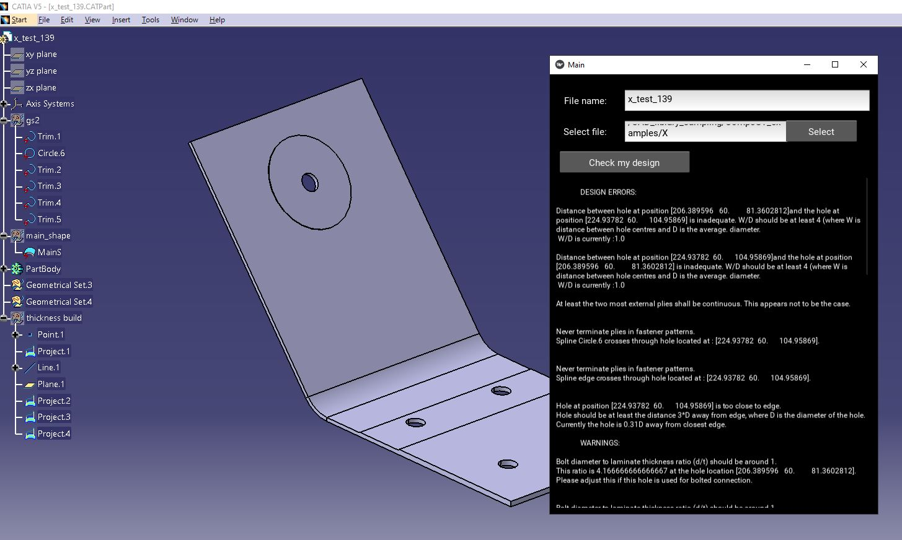

4.4.6. CAD¶
SmartDFM is build to be software agnostic. However, initial versions relied on CATIA to generate step file. From 4.3 onwards the SmartDFM can be run with .stp file as input. If user wishes to integrate other CAD software the same way CATIA is integrated, they can follow the CATIA_utils.py described below. Once the equivalent .step generation tools have been created they can be launched from p11 instead of CATIA_utils.export_step. bd_main.py will require editing of acceptable_extensions variable, for new file extensions to be accepted at launch.
CATIA¶
CATIA plug-in requires several bespoke scripts to function. Most of the bespoke CATIA functions are within CATIA.utils.py.
For step file exports the function ‘’CATIA_utils.export_step()’’ is used:
- CATIA_utils.export_step()¶
This function allows for generation of thicknesses based on tool surface and defined layup. Once the solid was created part will be saved as .CATpart and .stp. For more details refer to annotations in code.
- Parameters:
d – DesignVariables class, refer to Fact Base for details
- CATIA_utils.hole_loc()¶
This function is only used when GNN for hole identificaiton is not available. It requires holes geometry to be defined in dedicated geometry set in CATIA.
- Parameters:
part – path to the part store as string
The two functions above are used directly by pre_base.py in specific pre-rules.
- CATIA_utils.GNN_validation()¶
This is manually edited function that is used to validate GNN functionality. It collects gemetry identified and displays it in CATIA.
CATIA-pre 4.3 requirements¶
Prior to version 4.3 it was assumed all parts evaluated by SmartDFM have to created in CATIA. Therefore the UI included picking up the appropriate file from live CATIA. This also required contingency for when user forgot to spin-up CATIA. In such cae user was informed, and warned any background versions of CATIA must be closed.
try:
CATIA = win32com.client.Dispatch("CATIA.Application")
partDocument2 = CATIA.ActiveDocument
cat_name = CATIA.ActiveDocument.Name
cat_name = cat_name.split(".CATPart")[0]
except:
print("please open CATIA and corresponding file first, make sure no background CATIA instances are running (one was likely started now)")
sys.exit(1)
Figure below is from version 4.2 - CATIA being used to load the part, create thicknesses, export step.
